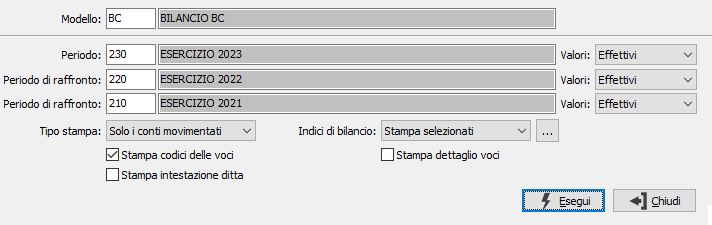
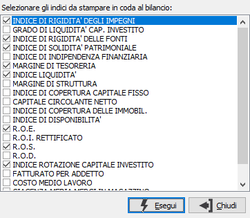

Stampa bilanci
Il programma esegue la stampa del bilancio secondo il modello di riclassificazione selezionato. Accedendo al programma appare la seguente finestra video:

MODELLO: inserire il modello da utilizzare per la stampa del bilancio. Sul campo sono attive le funzioni di ricerca (F9) sulla tabella stessa.
PERIODO: inserire il periodo per cui si desidera effettuare la stampa del bilancio. Sul campo sono attive le funzioni di ricerca (F9) sulla tabella stessa.
VALORI: indicare per quali valori, relativi al periodo, si desidera effettuare la stampa del bilancio: i valori effettivi, quelli rettificati oppure quelli preventivi.
PERIODO DI RAFFRONTO: inserire l'eventuale primo periodo da utilizzare come raffronto con il periodo principale. Sul campo sono attive le funzioni di ricerca (F9) sulla tabella stessa.
PERIODO DI RAFFRONTO: inserire l'eventuale secondo periodo da utilizzare come raffronto con il periodo principale. Sul campo sono attive le funzioni di ricerca (F9) sulla tabella stessa.
VALORI: indicare quali valori, del periodo di raffronto, si desidera raffrontare con quelli relativi al periodo principale: i valori effettivi, quelli rettificati oppure quelli preventivi.
TIPO STAMPA: valori possibili: Tutti i conti; Solo i conti movimentati;

INDICI DI BILANCIO: indicare se in coda al bilancio devono essere stampati anche gli eventuali indici. E' possibile decidere di non stampare gli indici, di stampare tutti gli indici presenti per il modello di riclassificazione oppure di stampare solo alcuni indici (selezionati). Con questa ultima opzione è possibile, tramite il pulsante posto a destra del campo, richiamare la finestra di selezione (riportata a lato) che contiene tutti gli indici esistenti per il modello richiesto. Per effettuare la selezione degli indici desiderati è sufficiente apporre la spunta a quelli che si desidera includere nella stampa e premere il pulsante Esegui.STAMPA CODICI DELLE VOCI: definisce se stampare il codice della voce di riclassificazione (casella con segno di spunta) oppure solo la descrizione (casella vuoto).
STAMPA DETTAGLIO VOCI: se la casella è spuntata indica di stampare il dettaglio dei conti che compongono la singola voce di riclassificazione con relativi importi.
STAMPA INTESTAZIONE DITTA: definisce se stampare l'intestazione della ditta (casella con segno di spunta).
La pressione del pulsante Esegui determina l’esecuzione della stampa.